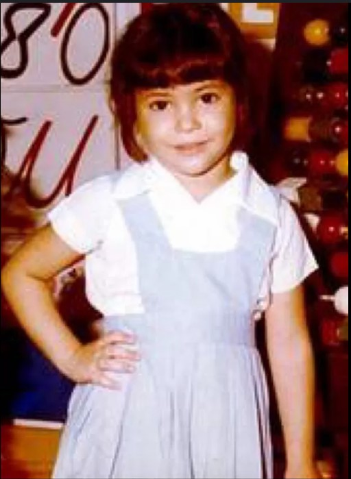

Biografía
Nació el 2 de febrero de 1977 en Colombia. Shakira significa «agradecida» en árabe. Cuando tenía cuatro años, su padre la llevó a un restaurante local de Oriente Medio, donde por primera vez escuchó el derbake, un tambor tradicional usado en la música árabe, acompañamiento típico de la danza del vientre. Antes de darse cuenta, ya estaba bailando sobre una mesa, y los clientes del restaurante aplaudieron con entusiasmo. Fue entonces cuando supo que quería ser artista.
Entre los diez y trece años de edad Shakira fue invitada a varios eventos en Barranquilla y obtuvo cierto reconocimiento en la zona. Asi conoció a un ejecutivo de Sony Colombia, quien tras una prueba decidió promover a la cantante en su productora. Shakira se trasladó a Bogotá y con catorce años de edad lanzó su primer álbum en 1991, titulado Magia, el cual incluye canciones escritas por ella misma En 1993 a los dieciséis años, participó en el XXXIV Festival Internacional de la Canción de Viña del Mar, donde obtuvo el tercer lugar de la competencia con la canción «Eres». Despegando asi su carrera Internacional.
A lo largo de su carrera, Shakira ha ganado múltiples premios Grammy y ha vendido millones de discos en
todo el mundo. Es conocida por su estilo único que fusiona pop, rock, y ritmos latinos con letras
profundas y mensajes sociales.
Además Shakira es reconocida por su activismo social. Fundó la Fundación Pies
Descalzos, que proporciona educación y alimentación a niños desfavorecidos en Colombia. También ha sido
embajadora de buena voluntad de UNICEF desde 2003.